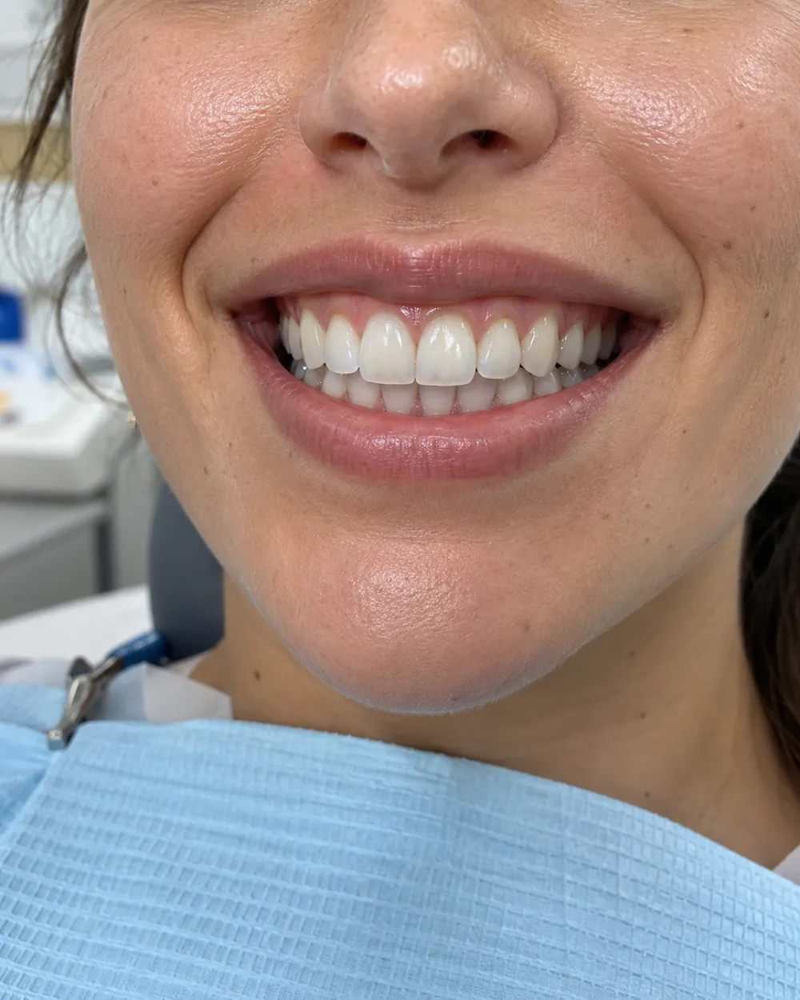
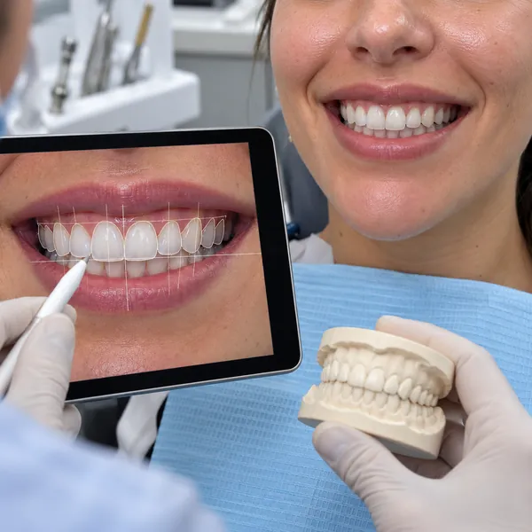
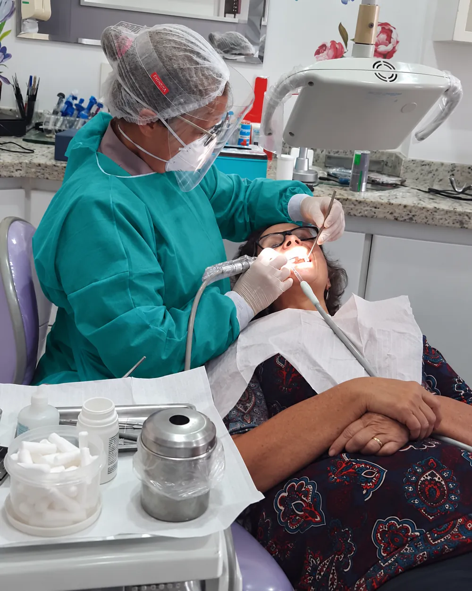
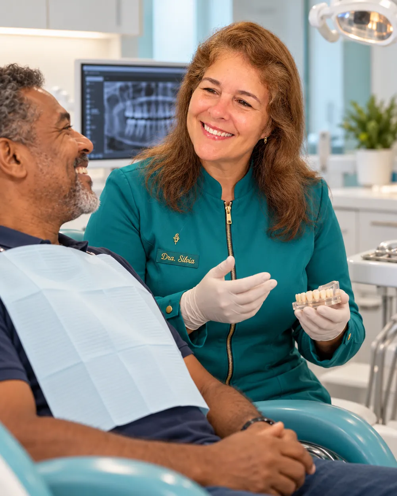
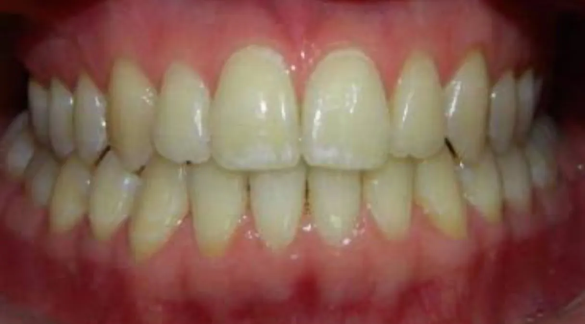
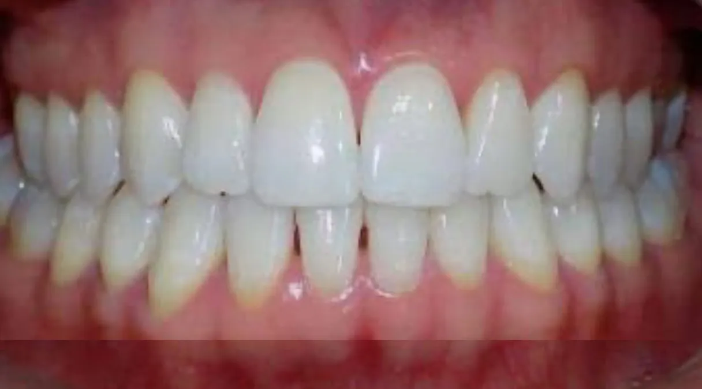
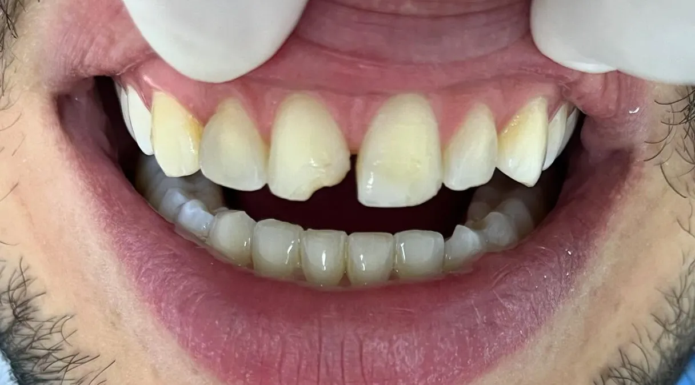
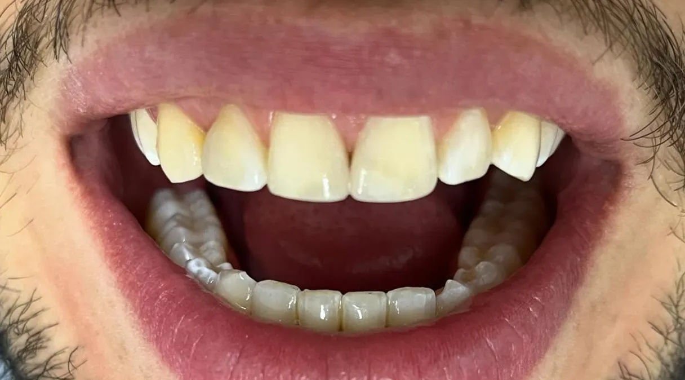
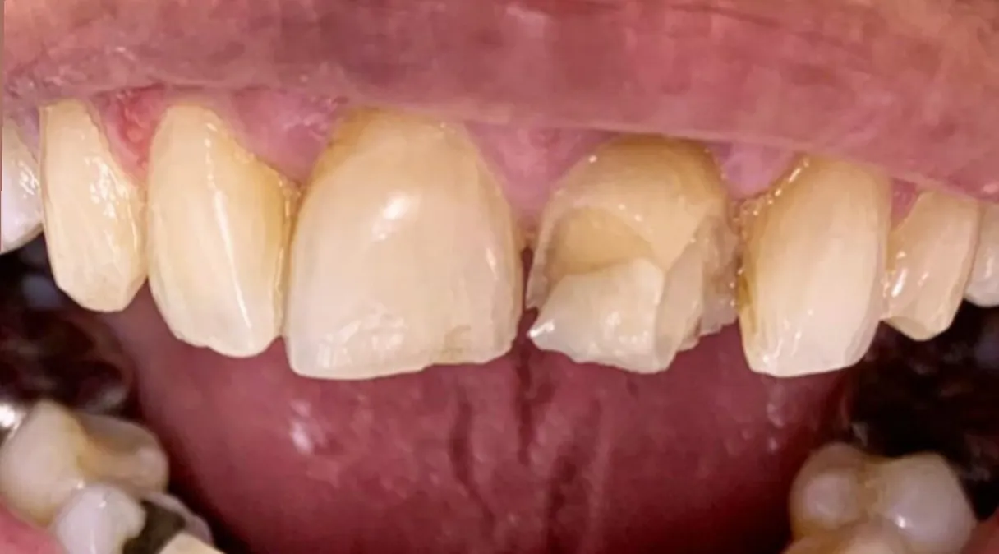
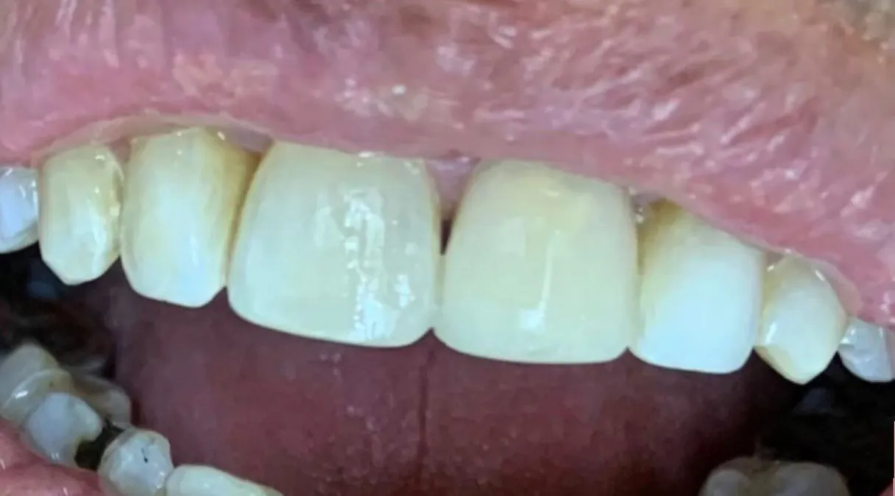

O que você gostaria de melhorar no seu sorriso?
Cada paciente chega ao consultório com uma necessidade diferente. Pode ser a aparência dos dentes, dificuldade para mastigar, dentes desgastados, restaurações antigas ou simplesmente o desejo de cuidar melhor da saúde bucal.
Por isso, o primeiro passo é compreender o seu caso e avaliar quais possibilidades podem ser indicadas.
-
01
Quero melhorar a estética do meu sorriso
Facetas, reanatomizações e outros tratamentos estéticos de acordo com cada caso.
-
02
Quero deixar meus dentes mais claros
Clareamento dental realizado com acompanhamento profissional.
-
03
Preciso recuperar dentes comprometidos ou ausentes
Próteses e planejamento de reabilitação para recuperar função e estética.
-
04
Quero cuidar da minha saúde bucal
Avaliação, prevenção, limpeza e tratamentos de clínica geral.
-
05
Estou com um dente que precisa de atenção
Avaliação para determinar a necessidade de tratamento ou extração.


Estética dental
Um sorriso mais harmônico sem perder a naturalidade.
A estética dental vai além de modificar a aparência dos dentes. O planejamento considera características do sorriso, proporções, função e particularidades de cada paciente.
- Facetas
- Reanatomização dental
- Correções estéticas
- Clareamento dental
- Planejamento do sorriso
- Avaliação personalizada
O objetivo é buscar um resultado integrado às características de cada paciente.
Prótese e reabilitação oral
Recuperar um sorriso também é recuperar função e segurança para o dia a dia.
Dentes desgastados, comprometidos ou ausentes podem afetar não apenas a aparência, mas também a mastigação e o equilíbrio da saúde bucal.
A Dra. Silvia possui especialização em Prótese Dental e experiência no planejamento de tratamentos voltados à reabilitação oral.
Especialista em Prótese Dental · UNICASTELO-SP

Cada caso é avaliado
individualmente para
buscar equilíbrio entre:
- Função mastigatória
- Saúde bucal
- Estética
- Harmonia do sorriso
- Naturalidade
Clareamento dental
Seus dentes perderam o brilho com o passar dos anos?
Hábitos alimentares, bebidas pigmentadas e o próprio envelhecimento podem alterar gradualmente a tonalidade dos dentes.
O clareamento dental é uma das possibilidades para quem deseja um sorriso mais claro, sempre respeitando as características e condições de saúde bucal de cada paciente.
Cuidado contínuo
Cuidar do sorriso também significa prevenir.
Nem sempre é preciso esperar aparecer dor ou algum problema evidente para procurar atendimento odontológico.
O acompanhamento periódico permite avaliar a saúde dos dentes e gengivas e identificar necessidades de tratamento.
Avaliação odontológica
Acompanhamento da saúde bucal e definição das necessidades de cada paciente.
Limpeza e prevenção
Cuidados periódicos para auxiliar na manutenção da saúde dos dentes e gengivas.
Clínica geral
Tratamentos odontológicos de acordo com as necessidades identificadas durante a avaliação.
Extrações
Quando indicadas após avaliação clínica e planejamento individual.

Mais de 40 Anos de dedicação à Odontologia
Mais de 40 anos dedicados à Odontologia.
Formada pela Universidade Federal da Bahia (UFBA), Dra. Silvia Chagas construiu uma trajetória profissional dedicada ao cuidado odontológico e à reabilitação oral.
É Especialista em Prótese Dental pela UNICASTELO-SP e possui cursos de pós-graduação em Estética Dental.
Sua abordagem busca compreender cada paciente de maneira individual, unindo experiência clínica, planejamento e atenção aos detalhes.
Na reabilitação do sorriso, função e estética caminham juntas, buscando resultados naturais e adequados às características de cada pessoa.
- UFBA
- Graduação em Odontologia
- UNICASTELO-SP
- Especialização em Prótese Dental
- Pós-graduação
- Cursos em Estética Dental
Dra. Silvia ChagasCRO-BA 3018
Um atendimento construído em torno de cada paciente.
- 01
Atendimento individualizado
Cada planejamento parte das necessidades e características de cada paciente.
- 02
Foco em função e estética
Tratamentos pensados para integrar saúde, mastigação e harmonia do sorriso.
- 03
Experiência profissional
Mais de quatro décadas dedicadas à Odontologia.
- 04
Estrutura de atendimento
Consultório preparado para proporcionar conforto durante o acompanhamento odontológico.
Cada sorriso tem sua própria história.
Conheça alguns casos acompanhados pela Dra. Silvia.






Cada caso possui características individuais. A indicação e os resultados podem variar conforme avaliação clínica.
Localização
Atendimento odontológico em Salvador
Centro Odontomédico Henri Dunant
Rua Agnelo Brito, 187 – Sala 305Salvador – BA
Horários
Segunda a sexta: 8h às 19h
Sábado: 8h às 12h
Dúvidas frequentes
Perguntas frequentes
A Dra. Silvia Chagas atua principalmente com Estética Dental, Prótese Dental e Reabilitação Oral. Também realiza clareamento dental e cuidados odontológicos gerais, como avaliação, limpeza e prevenção, tratamentos de clínica geral e extrações quando indicadas.
A indicação depende de uma avaliação individual. Na consulta, são analisadas a saúde dos dentes e das gengivas, suas queixas e expectativas. A partir do diagnóstico, a Dra. Silvia apresenta as possibilidades adequadas ao seu caso.
O planejamento estético considera as proporções do sorriso, as características faciais, a forma, a cor e as características dos dentes, além das particularidades de cada paciente. O objetivo é buscar um resultado harmônico e integrado à sua aparência.
A prótese pode ser considerada quando há dentes ausentes, muito desgastados ou comprometidos, que afetam a mastigação, a estética ou o equilíbrio da saúde bucal. A indicação e o tipo de prótese só podem ser definidos após avaliação clínica presencial.
Sim. A avaliação existe justamente para compreender as necessidades e as possibilidades de cada caso. Você não precisa chegar com um tratamento definido.
Rua Agnelo Brito, 187 – Sala 305
Salvador – BA
CEP 40210-245
O agendamento é feito diretamente pelo WhatsApp (71) 99909-0838. A equipe da Dra. Silvia informa os horários disponíveis e orienta sobre a primeira consulta.
Comece por uma conversa
O primeiro passo é entender o que o seu sorriso precisa.
Converse com nossa equipe para agendar seu atendimento e iniciar uma avaliação individualizada com a Dra. Silvia.
Clique e fale com nossa equipe pelo WhatsApp.